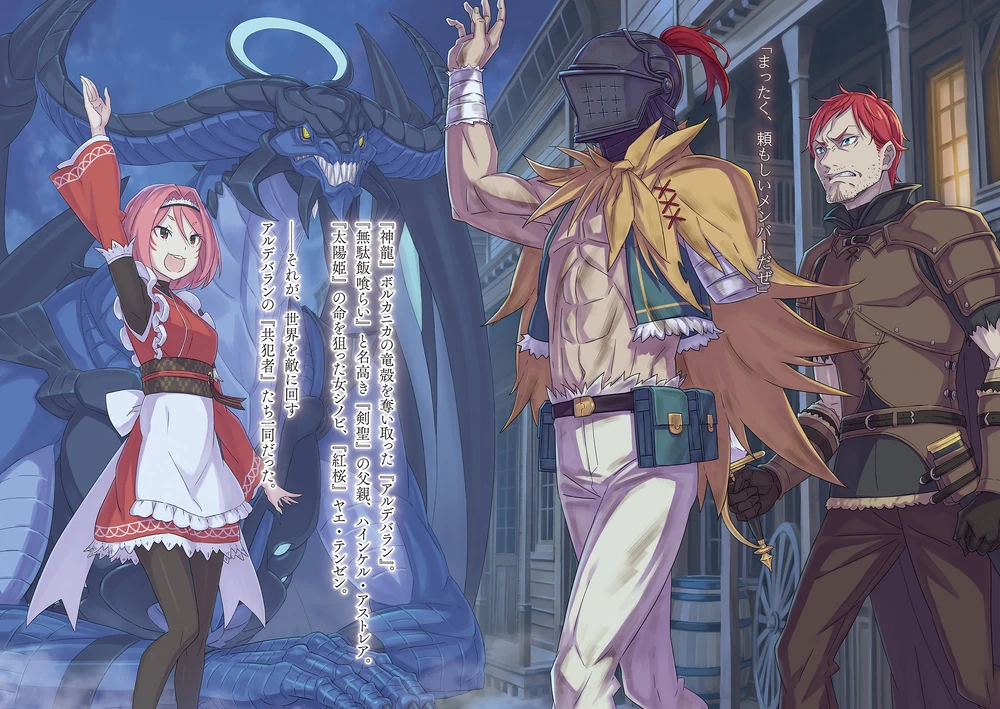

Arco 9: Luz da Estrela Sem Nome
O "Arco 9: Luz da Estrela Sem Nome" (ou "O Luar de uma Estrela Sem Nome") de Re:Zero - Starting Life in Another World é o arco atual da web novel, ainda em andamento, e se desenrola após os eventos no Império Vollachia. Ele marca o retorno de Subaru e seus companheiros remanescentes a Lugunica, mas o cenário e os desafios são ainda mais complexos e perigosos.
Neste arco, o grupo se encontra em um mundo que está passando por mudanças significativas e enfrentando novas ameaças que se manifestam de maneiras inesperadas. A principal ambientação é a retomada das questões pendentes em Lugunica e a necessidade de lidar com as consequências dos eventos passados em Vollachia.
O foco recai sobre o reencontro com os personagens que foram separados, a resolução de mistérios antigos e a preparação para a batalha final contra as forças que ameaçam o mundo. Subaru continua a amadurecer, utilizando sua habilidade "Retorno Pela Morte" e suas experiências para guiar seus aliados através de perigos crescentes.
Em resumo, o Arco 9 é a fase culminante da saga de Re:Zero, onde as peças finais são postas no tabuleiro para a resolução dos grandes conflitos, e Subaru e seus aliados devem enfrentar seus maiores desafios até agora, buscando a "Luz da Estrela Sem Nome" que pode trazer a tão desejada paz ou uma nova era de caos.
Neste arco, o grupo se encontra em um mundo que está passando por mudanças significativas e enfrentando novas ameaças que se manifestam de maneiras inesperadas. A principal ambientação é a retomada das questões pendentes em Lugunica e a necessidade de lidar com as consequências dos eventos passados em Vollachia.
O foco recai sobre o reencontro com os personagens que foram separados, a resolução de mistérios antigos e a preparação para a batalha final contra as forças que ameaçam o mundo. Subaru continua a amadurecer, utilizando sua habilidade "Retorno Pela Morte" e suas experiências para guiar seus aliados através de perigos crescentes.
Em resumo, o Arco 9 é a fase culminante da saga de Re:Zero, onde as peças finais são postas no tabuleiro para a resolução dos grandes conflitos, e Subaru e seus aliados devem enfrentar seus maiores desafios até agora, buscando a "Luz da Estrela Sem Nome" que pode trazer a tão desejada paz ou uma nova era de caos.